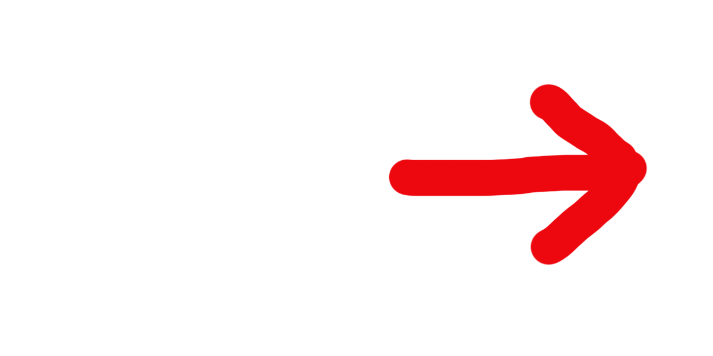
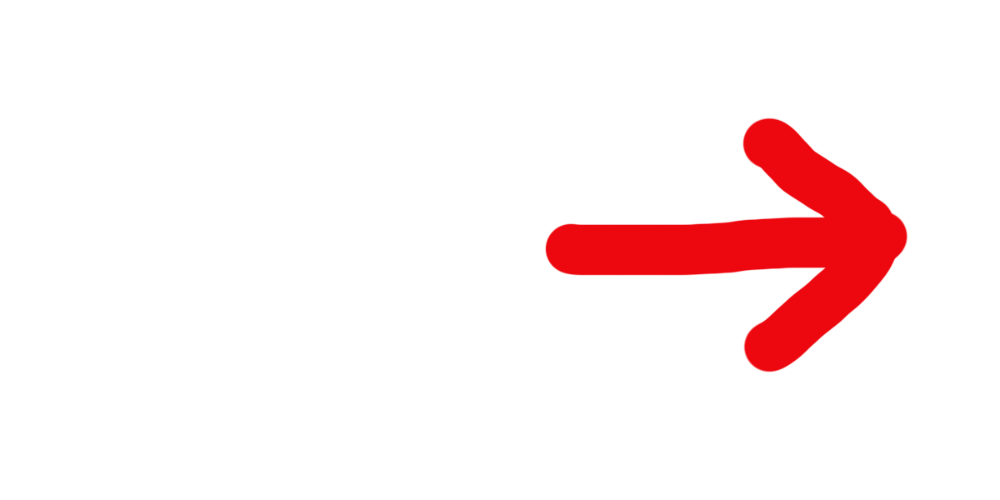

All drawings, arrows, home buttons, and sounds were made specifically for this project.


Season Drawings
Each season was represented through a digital drawing.
 


Directional Arrows
Each arrow was drawin in seasonal colors and used for navigation.

Home Buttons
Home buttons were designed to match each season’s tone and placed at the top of each page.
Audio
Each season includes a sound element, created using GarageBand and Audacity.